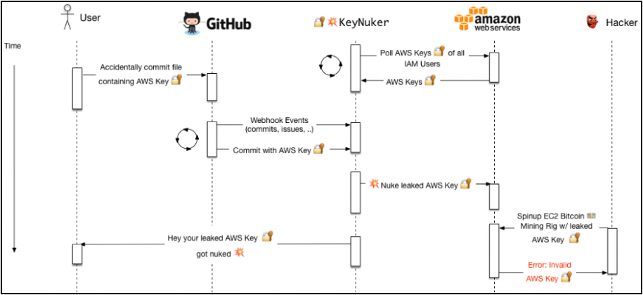

Data publicării: 28.01.2019
Autor articol: Sabin Buraga
Punerea problemei
După cum am văzut în articolele anterioare, actualmente unul dintre stilurile arhitecturale larg folosite în conceperea de aplicații Web este cel denumit (impropriu) serverless (Roberts, 2018). Ca avantaj major față de alte abordări, o aplicație serverless nu mai necesită crearea unui server menit a gestiona resursele aplicației în cauză. Astfel, anumite funcționalități de bază, vizând în special controlul – e.g., autentificarea și autorizarea în contextul managementului descentralizat al utilizatorilor –, sunt preluate de servicii de infrastructură disponibile “în nori”. Pot fi folosite diverse soluții comerciale populare (Wang et al., 2018) – precum AWS (Amazon Web Services), Google Cloud sau Microsoft Windows – ori având caracter deschis: Apache CloudStack, OpenStack și altele.
În contextul mai larg al ariilor de interes specifice dezvoltării de aplicații serverless exploatate “în nori” (Baldini et al., 2017), apare – natural – problema studierii vulnerabilităților potențiale care afectează această categorie de aplicații distribuite. Similar clasamentelor celor mai importante riscuri de securitate prezente în aplicațiile Web tradiționale și a celor mobile, organismul non-profit OWASP (Open Web Application Security Project) a redactat o listă – aflată, la momentul redactării acestui articol, în variantă preliminară – a unor riscuri majore de securitate specifice.
În cele ce urmează, le vom aminti pe cele semnificative:
- Injectarea de comenzi/cod.
- Autentificarea deficientă.
- Expunerea involuntară a datelor.
- Recurgerea la entități XML externe.
- Controlul precar al accesului.
- Configurările eronate.
- Atacurile de tip XSS.
- Deserializările nesigure de date.
- Folosirea componentelor software cunoscute ca fiind vulnerabile.
- Insuficienta jurnalizare și monitorizare.
O parte dintre acestea se regăsesc – uneori, cu același impact din punct de vedere al consecințelor – și la aplicațiile Web obișnuite. Pentru o serie de detalii, a se parcurge (Buraga, 2018) și (Buraga, 2005).
Risc 1: Injectare de comenzi SQL sau cod malițios
Pe prima poziție în evaluarea riscurilor se află categoria de vulnerabilități legate de injectarea de comenzi (No)SQL și de cod malițios, inclusiv de comenzi de tip script în consola sistemului folosit.
Ca vectori de atac, în afara celor tradiționali, în cazul serverless apar noi “oportunități”. Așadar funcțiile de tratare a unor evenimente benigne pot deveni maligne deoarece sursele evenimentelor – e.g., evenimente privind stocarea în cloud, procesările fluxurilor de date (stream data processing), vizând modificări la nivelul sistemelor de baze de date găzduite “în nori”, notificări diverse, alterări ale codului-sursă etc. – pot fi necunoscute. De asemenea, originea unei resurse este dificil de detectat, deci nu putem avea încredere în datele de intrare sau în validitatea oricărei resurse.
Impactul unui atac soldat cu succes poate fi semnificativ la nivel de backend.
Risc 2: Autentificare precară
Funcțiile serverless sunt executate în containere care nu păstrează starea aplicației (stateless) – o deosebire importantă față de arhitecturile tradiționale. Astfel, nu există un flux principal gestionat de server al datelor/sarcinilor efectuate, existând în schimb o multitudine de componente ce rulează independent, slab conectate. Atacatorul poate detecta o astfel de componentă – i.e. microserviciu – care folosește resurse “abandonate”, precum API-uri deschise sau servicii de stocare “în nori”. De asemenea, o serie de funcționalități interne pot fi accesate eventual fără autentificare.
Vulnerabilitatea rezidă în faptul că, din punct de vedere arhitectural, sistemul-țintă ofere breșe de securitate, fiind mult mai complex.
Din fericire, atacurile de tip brute force pentru “ghicirea” parolelor slabe sunt mai rar întâlnite, deoarece aplicațiile serverless recurg uzual la servicii de autentificare și autorizare bazate pe OAuth și OpenID Connect.
Aplicarea unei scheme de autentificare sigură și completă poate fi mult mai dificilă decât mecanismul clasic recurgând la sesiuni Web sau alt model similar bazat pe jetoane (tokens).
Risc 3: Expunerea datelor
Expunerea involuntară a datelor importante (sensitive data exposure), inclusiv a celor care vizează intimitatea (privacy) utilizatorilor poate să apară ca breșă a oricărei aplicații Web, fie ea una găzduită pe serverul propriu (on-premises), fie disponibilă “în nori”.
Vectorii de atac binecunoscuți – preluarea cheilor de acces, atacuri de tip man-in-the-middle pentru citirea/alterarea datelor aflate în tranzit etc. – sunt aceeași. Însă, un atacator poate viza drept țintă un serviciu de stocare a datelor oferit de platforma cloud și nu un server de baze de date instalat pe un server propriu. Suplimentar, pot fi folosite instrumente disponibile liber (precum KeyNuker) pentru a găsi chei de acces la servicii cloud sau se pot folosi “rămășițe” neșterse încă de la execuțiile anterioare de cod.
Evident, datele importante nu trebuie stocate “în clar” sau criptate cu algoritmi demonstrați ca fiind slabi (weak cryptography).
Fluxul de activități pe care un atacator le-ar putea întreprinde asupra serviciilor AWS este ilustrat în diagrama următoare, considerând instrumentul KeyNuker amintit mai sus).

Risc 4: Utilizarea entităților XML externe
Includerea de entități XML externe (XXE – XML External Entities) malițioase în documentele XML (Extensible Markup Language) poate conduce la furt de date, inițierea de cereri spre un server, detectarea unor sisteme interne instalate, atacuri de tip refuz al serviciilor (DoS – Denial of Service) și altele.
Această vulnerabilitate poate fi prezentă în oricare aplicație ce necesită prelucrarea datelor XML via un procesor (parser) XML. Impactul asupra securității software poate fi important, deoarece atacatorii pot extrage fișiere de interes prezente în mediul de execuție al aplicației considerate.
Din fericire, utilizarea unor medii închise (de tip cloud privat) se dovedește a fi o soluție bună pentru prevenirea unui asemenea tip de atac.
Risc 5: Controlul precar al accesului
În mediile disponibile “în nori” este relativ ușor ca atacatorul să detecteze o componentă având privilegii superioare, exploatând astfel drepturile de acces la date sau cod executabil. O asemenea vulnerabilitate e posibilă pentru că este relativ dificil pentru a detecta automat configurațiile de control al accesului la un volum suficient de mare de componente stateless ale sistemului. De asemenea, depanarea este mult mai greu de efectuat.
Orice funcție care are privilegii mai mari decăt cele minimale (least privilege) poate fi potențial consideratâ drept vector de atac, iar impactul asupra securității poate fi semnificativ în unele cazuri.
Risc 6: Configurări eronate
Configurările (micro)serviciilor proprii de tip funcțional poate crea probleme odată executate de mediul de rulare. Fiindcă nu deținem infrastructura cloud, breșele de securitate pot să survină din pricina fișierelor de configurare prost concepute și insuficient testate.
Astfel, atacatorii pot studia comportamentul funcțiilor ce prezintă un timp de execuție nejustificat de mare sau produc diverse erori deoarece anumiți parametri de configurare au valori necorespunzătoare.
Ca rezultate nedorite se pot aminti “scurgerea” de informații nedorite, pierderi de resurse financiare, accesul neautorizat la resursele disponibile “în nori”. In anumite situații, riscul înregistrat poate fi major.
Risc 7: Cross-Site Scripting (XSS)
Acest atac are ca țintă browser-ul Web, deci survine indiferent de categoria de aplicații. Pentru cele serverless, deosebirea este aceea că fragmentul de cod JavaScript malițios (așa-numitul payload) poate fi stocat “în nori”, având ca origini date din mesaje de e-mail, fișiere de jurnalizare, date de la senzori ori alte dispozitive de tip IoT (Internet of Things) etc.
La nivel de server, un astfel de atac nu prezintă riscuri deosebite, însă afectează cu precădere – uneori semnificativ – clientul Web și utilizatorul în sine.
Risc 8: Deserializări nesigure de date JSON
Deoarece multe componente (servicii Web, API-uri publice, sisteme de stocare etc.) – concepute în limbaje dinamice precum Python, PHP ori JavaScript – recurg la formatul JSON (JavaScript Object Notation) pentru (de)serializarea datelor, există riscul ca atacurile de acest tip să fie prevalente în contextul serverless.
Lacunele de securitate provin din utilizarea unor biblioteci de serializare concepute precar și din faptul că formatul JSON este insuficient formalizat – a se studia în acest sens articolul (Seriot, 2016) și prezentarea lui Seriot (2018).
Risc 9: Recurgerea la componente prezentând vulnerabilități cunoscute
Funcționalitățile aplicațiilor serverless se bazează uzual pe microservicii care, la rândul lor, au implementări depinzând de diverse alte componente: API-uri, SDK-uri, module, biblioteci și/sau framework-uri. Toate acestea aduc, indubitabil, un nivel suplimentar de risc.
De asemenea, un atacator poate include voit sau sugera spre utilizare o componentă vulnerabilă – fenomen cunoscut sub denumirea “otrăvirea fântânii” (poisoning the well) – pentru a exploata ulterior slăbiciunile sistemului vizat. Un asemenea modus operandi este, din nefericire, destul de răspândit.
Ca măsuri de precauție, se poate folosi un instrument software pentru detectarea dependențelor eronate și consultarea frecventă a bazelor de date publice referitoare la incidente de securitate și vulnerabilități raportate.
Risc 10: Jurnalizare și monitorizare insuficiente
Ultimul risc prezentat, dar nu și cel mai puțin important, vizează mecanismele de jurnalizare și de monitorizare a acțiunilor realizate în cadrul unei aplicații. Pentru a-și atinge scopurile și a-și ascunde urmele, atacatorii se pot baza (și) pe insuficientele mijloace de jurnalizare și monitorizare pe care dezvoltatorii le-au prevăzut în arhitectura generală a sistemului conceput. Aplicațiile serverless sunt mai dificil de monitorizat, deoarece nu există o modalitate unitară de aplicat, iar unele componente aparțin infrastructurii cloud folosite, accesul la jurnalele acestora fiind mai greu de obținut.
Astfel, slăbiciunea apare în absența unui mecanism solid de auditare corespunzătoare. Unele soluții cloud existente nu oferă suficiente mijloace de a realiza activități riguroase de monitorizare și jurnalizare, iar riscurile vizând securitatea pot fi însemnate.
Alte riscuri
Există și alte aspecte de interes ce pot fi luate în considerație de personalul răspunzător cu securitatea aplicațiilor Web de tip serverless. Le amintim succint pe cele avănd un impact considerabil:
- Denial of Wallet – atacatorii pot efectua diverse acțiuni malefice care au impact asupra resurselor financiare ale unei organizații, ținând cont că accesul la diversele funcționalități puse la dispoziție de ofertanții de servicii “în nori” au un caracter (exclusiv) mercantil. Deci, monitorizarea și ajustarea dinamică unor parametri privind comportamentul aplicației în execuție și resursele alocate sunt deosebit de importante din punct de vedere pragmatic.
- Insecure Secret Management – reprezintă o breșă de securitate referitoare la gestiunea nesigură a datelor secrete precum parole, chei de acces la API-uri, cărți de credit, documente și diverse resurse vizând intimitatea utilizatorilor, acțiuni executate de sistem și multe altele.
- Flow Manipulation – un asemenea tip de atac se referă la modificarea neautorizată a fluxului de activități/date ce se desfășoară în cadrul aplicației, ce poate cauza probleme la nivelul întregii afaceri desfășurate.
Concluzii
Acest articol a surprins o serie de aspecte legate de posibilele riscuri de securitate în contextul aplicațiilor aliniate paradigmei serverless și exploatate “în nori”. Am descris cele mai reprezentative vulnerabilități raportate și studiate în cadrul inițiativei OWASP. Alte detalii de interes sunt expuse în lucrarea (Hong et al., 2018).
Pentru amănunte referitoare la suportul acordat de cele mai populare platforme facilitând exploatarea aplicațiilor serverless, se poate parcurge studiul comparativ elaborat de Wang et al. (2018).
Referințe bibliografice
- Baldini, I. et al., “Serverless computing: Current trends and open problems”, Research Advances in Cloud Computing, Springer, 2017.
- Buraga, S., “On the Security of Web Applications”, Informatica Economică, 2 (34), 2005.
- Buraga, S., “Securitatea aplicațiilor Web”, prelegere în cadrul cursului “Tehnologii Web”, Facultatea de Informatică, Universitatea “Alexandru Ioan Cuza” din Iași, România, 2018: http://profs.info.uaic.ro/~busaco/teach/courses/web/web-film.html#week14
- Hong, S., Srivastava, A., Shambrook, W., & Dumitraș, T., “Go serverless: securing cloud via serverless design patterns”, 10th {USENIX} Workshop on Hot Topics in Cloud Computing (HotCloud 18), 2018.
- Roberts, M., Serverless Architectures, 2018: http://martinfowler.com/articles/serverless.html
- Seriot, N., Parsing JSON is a Minefield, 2016: http://seriot.ch/parsing_json.php
- Seriot, N., “Parsing JSON Considered Harmful”, Toulouse Hacking Convention, 2018: http://seriot.ch/resources/talks_papers/20180309_json_toulouse.pdf
- Wang, L. et al., “Peeking Behind the Curtains of Serverless Platforms”, Proceedings of the 2018 USENIX Annual Technical Conference (USENIX ATC ’18), Boston, July 11–13, 2018.
- * * *, CNCF Cloud Native Interactive Landscape, 2018: http://landscape.cncf.io/grouping=landscape&license=open-source
- * * *, CVE (Common Vulnerabilities and Exposures), 2018: http://cve.mitre.org/
- * * *, KeyNuker, 2018: http://github.com/tleyden/keynuker
- * * *, Programmable Web – Cloud APIs, 2018: http://www.programmableweb.com/category/cloud/api